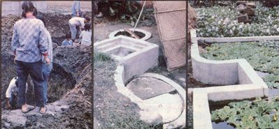

A group of commune members excavate a biogas pit .... A typical Sichuan family digester is compact and allows for periodic cleanouts . . . . Larger methane ""plants""arc sometimes covered with ponds, which are used to culture aquatic vegetation